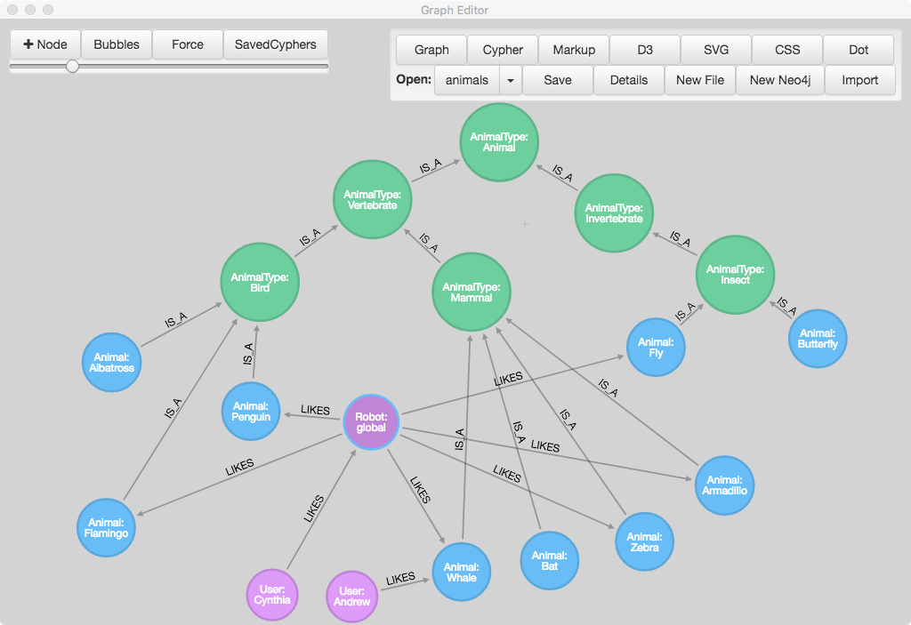
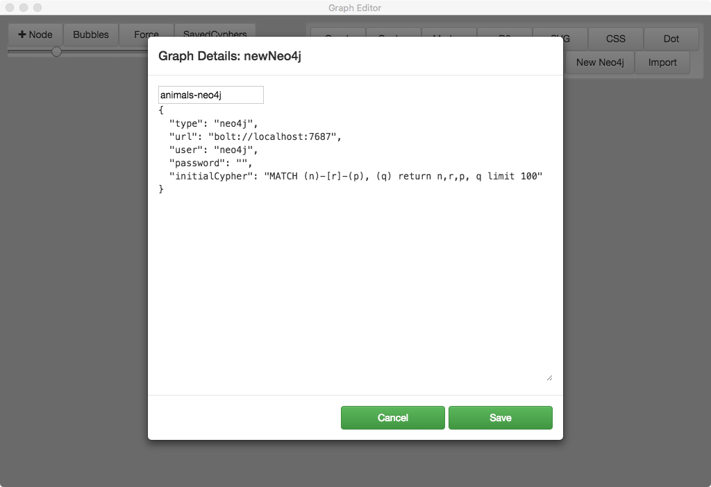

https://github.com/wwlib/graph-editor
(see also: https://github.com/wwlib/neo4j-knowledge-graph)
https://wwlib.github.io/graph-editor/graph-editor-intro.html
graph-editor is an electron-webpack/react app for designing graphs and editing live neo4j databases.
Note: Graph Editor is uses the Graph Diagram library (https://wwlib.github.io/graph-diagram/) which is a TypeScript port of a graph-editing project called Arrows, originally created by Alistair Jones at Neo4j (http://www.apcjones.com/arrows/, https://github.com/apcj/arrows).
The use of the yarn package manager is strongly recommended, as opposed to using npm.
yarn
# run application in development mode
yarn dev
# compile source code and create webpack output
yarn compile
# `yarn compile` & create build with electron-builder
yarn dist
# `yarn compile` & create unpacked build with electron-builder
yarn dist:dir

-Use the New Neo4j button to create a connection to a live neo4j database
"connection": {
"type": "neo4j",
"url": "bolt://localhost:7687",
"user": "neo4j",
"password": "<PASSWORD>",
"initialCypher": "MATCH (n)-[r]-(p) return n,r,p limit 100"
}
